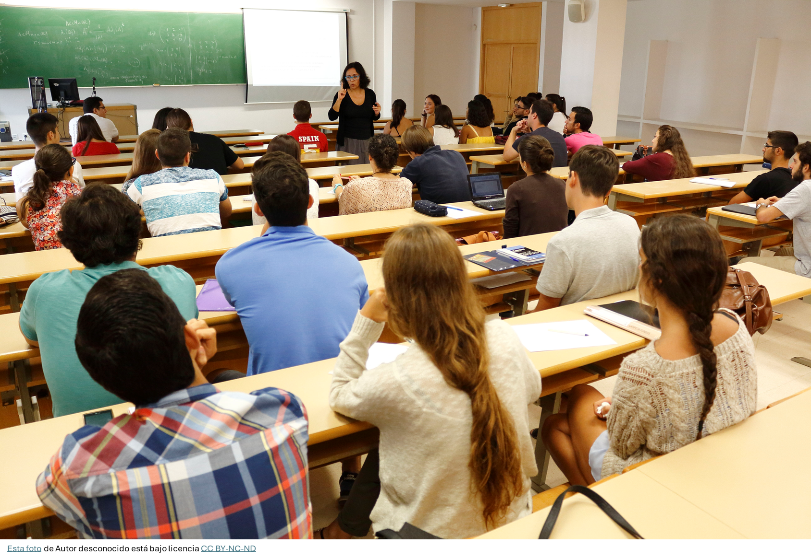
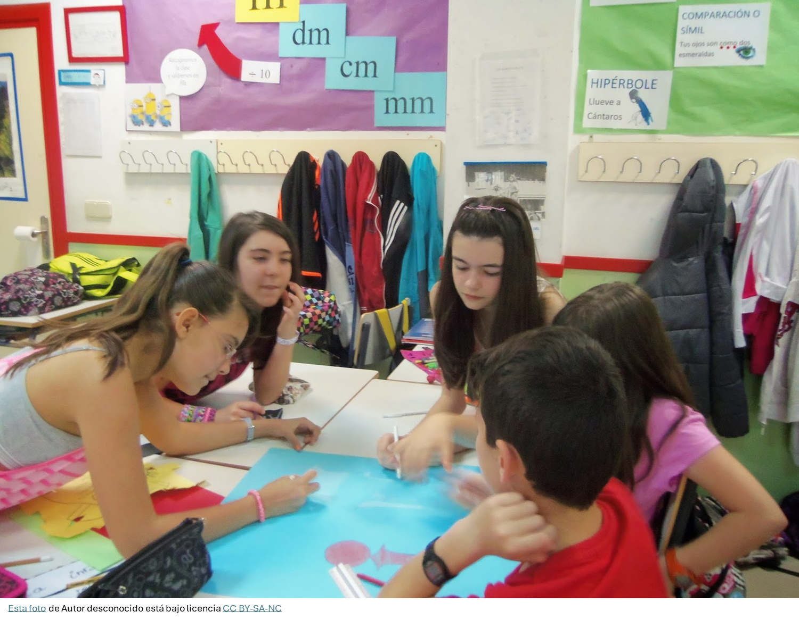

-GRUPO CLASE (GRAN GRUPO) para presentacion del proyecto, puesta en común, exposiciones globales, etc.

-4 ó 5 GRUPOS HETEROGÉNEOS DE 5 MIEMBROS. En función del número de alumnado que tenga la unidad.
La selección del alumnado de cada grupo se hace en función del nivel de compromiso previsto del alumnado. Es un configuración a priori en función de los resultados académicos, historial y actitud del alumnado. En cada grupo de haber al menos: 1 o 2 alumnos con alto nivel de implicación, alumnado con una implicación media o normal y la presencia de 1 alumno/a con menor rendimiento académico. Esta configuración no es inamovible sino flexible y sujeta a revisión y modificación.
